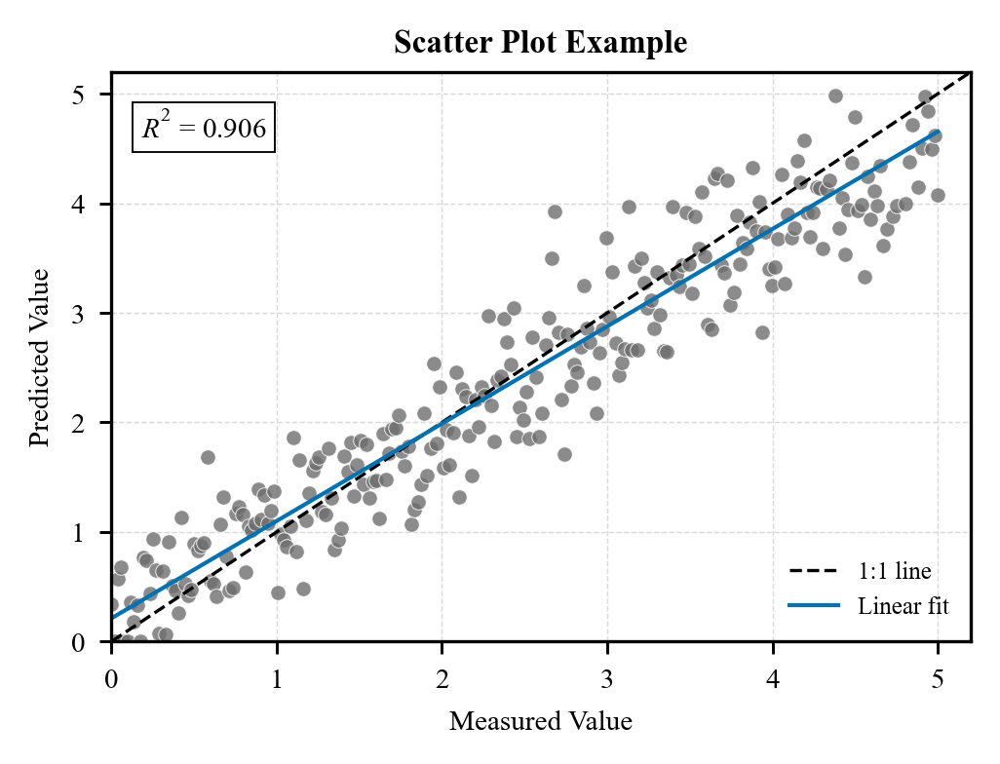
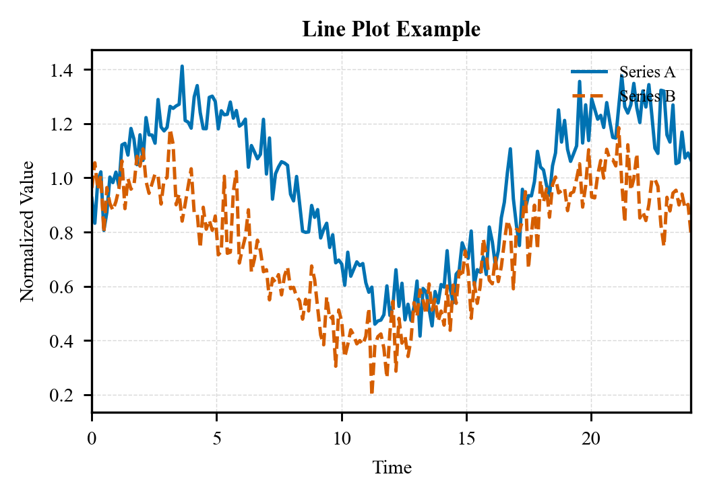
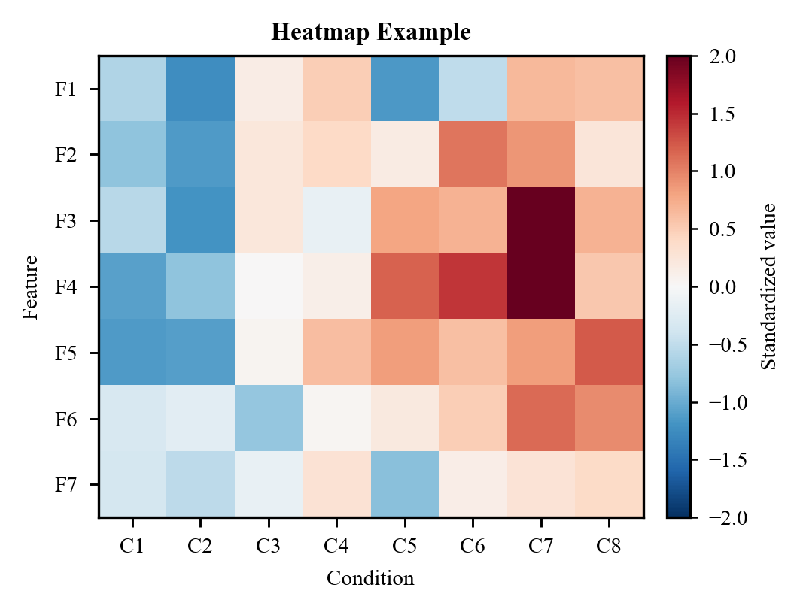
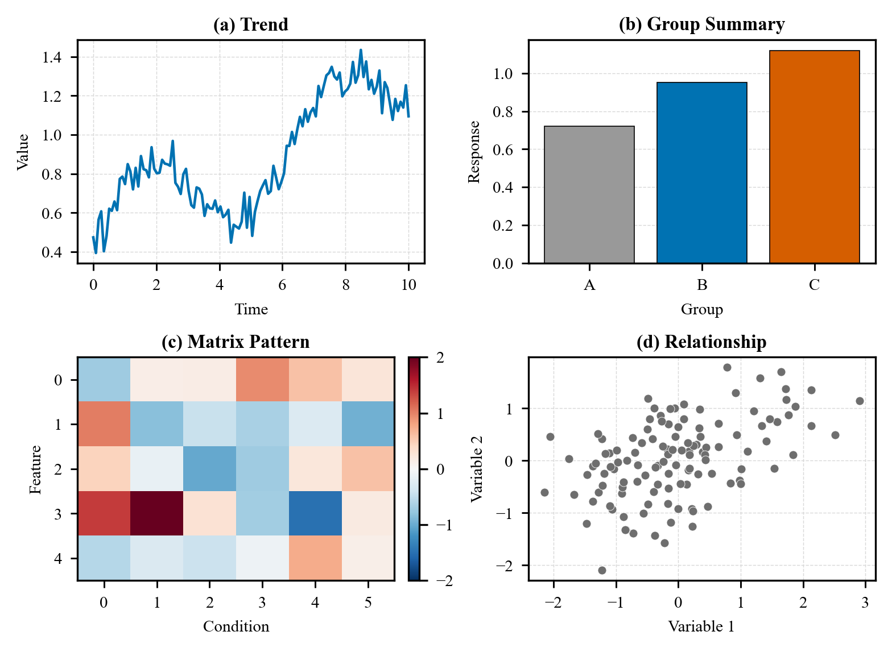

What it does
sci-figure gives an AI agent practical instructions for creating publication-ready scientific plots: figure contracts, Python/R backend discipline, editable SVG/PDF exports, Times-style typography, full-box axes, outward left/bottom ticks, and compact multi-panel titles.
It was inspired by the organization of nature-figure, but the rules and examples are original and oriented toward general SCI and Elsevier-friendly visual conventions.
中文简介
sci-figure 是一套面向 AI agent 的通用科研绘图指令包，适合 SCI 论文、技术报告和投稿图。 它参考了 nature-figure 的组织方式，但使用我们自己的规则和示例，更偏向 Elsevier 风格： Times 字体、四边框、左下外向刻度、紧凑多子图标题和克制科研配色。
Gallery




Keywords
scientific figure, publication figure, SCI figure, Elsevier figure style, AI agent skill, manuscript plots, matplotlib, ggplot2, editable SVG, research visualization.